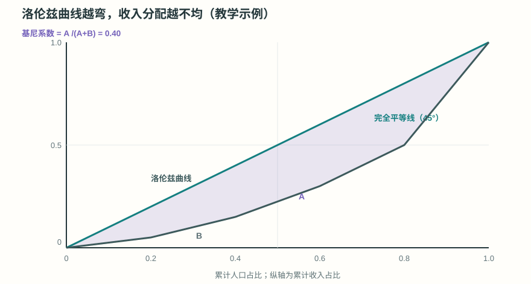
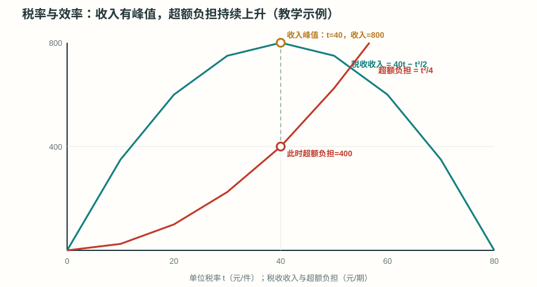

CHAPTER 22 · MICROECONOMICS
再分配与税收效率
衡量不平等，也要衡量代价：用洛伦兹曲线与基尼系数看待分配，用超额负担理解征税的效率损失。
收入分配与税收的两难
市场结果未必公平：同样的努力，收入可能相差悬殊。政府常用税收与转移支付来再分配，但征税本身会改变人们的行为，带来效率损失。本章要回答两个问题：不平等怎么衡量？再分配的代价有多大？
洛伦兹曲线与基尼系数
把所有人按收入从低到高排列，横轴是累计人口占比，纵轴是累计收入占比，画出的曲线就是洛伦兹曲线 Lorenz curve。若人人收入相同，曲线就是 45° 的完全平等线；越不平等，曲线越向下弯曲。
教学示例：五人收入为 1、2、3、4、10，合计 20。累计收入份额依次为 0.05、0.15、0.30、0.50、1.0，对应累计人口 0.2、0.4、0.6、0.8、1.0。用梯形法可算出曲线下面积 B=0.30，于是 A=0.50−0.30=0.20：
基尼系数 Gini coefficient把洛伦兹曲线与平等线之间的面积 A 除以整个三角形面积 A+B，取值在 0（完全平等）与 1（完全不平等）之间。本例 G=0.40。

注意基尼系数只是一个概括指标：同样的基尼值可能对应不同的分布形状，且它受数据口径（税前还是税后、是否含转移支付）影响，比较时必须先说明定义。
税收效率：超额负担
征税不仅转移购买力，还会改变人们的选择（少买被征税的商品、少工作）。由此损失的经济剩余超过政府收到的收入，多出的部分叫超额负担 excess burden（也就是无谓损失）。
教学示例：需求 P=100−Q，供给 P=20+Q。征单位税 t 后，均衡要求 100−Q=20+Q+t，解得：
税收收入 40t−t²/2 在 t=40 时达到最大 800；超额负担 t²/4 随税率加速上升，t=40 时为 400。这意味着加税并非总能增加收入，却持续放大效率损失。

两点启示：使收入最大的税率，不等于使效率损失最小的税率；税率越高，超额负担增长得越快。因此从效率角度看，通常更支持税基宽广、税率较低的税制，以减少对行为的扭曲。
再分配的工具与权衡
常见的再分配工具包括累进所得税、转移支付，以及教育、医疗等公共服务。它们能降低不平等（使洛伦兹曲线更靠近平等线），但也可能削弱工作与储蓄的激励，产生超额负担。
因此“最优税制”不是简单地让平等最大化，而是在公平与效率之间权衡：对弹性小、外部性强的税基可以征较高税，对易被规避、反应敏感的税基则宜轻征；同时尽量把税基做宽、税率做平。
还要注意，衡量不平等有多种指标（基尼系数、最高收入份额、贫困率），它们关注不同侧面，且对数据口径与是否计入转移支付很敏感。政策讨论中必须先固定定义，再谈高低与比较。
交互实验：税率、收入与超额负担
拉弗形状的收入曲线
沿用需求 P=100−Q、供给 P=20+Q。拖动滑块改变单位税 t，观察成交产量、税收收入与超额负担如何随之变化。
税率 t=40：成交 Q=20，税收收入=800，超额负担=400；收入达到峰值 800，超额负担为 400。
成交 Q=40−t/2，税收收入 =40t−t²/2，超额负担 =t²/4；不使用随机值。
t=20 和 t=60 的税收收入相同吗？超额负担呢？这说明了什么？
查看答案
两者收入相同：40×20−200=600，40×60−1800=600。但超额负担不同：t=20 时为 20²/4=100，t=60 时为 60²/4=900。也就是说，筹同样的收入，用较低税率、较宽税基的方式效率损失更小。
引用文献与适用范围
本章数值（收入 1、2、3、4、10 的分配，基尼系数 0.40，税收收入与超额负担函数）均为教学示例，不是观测数据；不平等与再分配的概念参考以下教材：
- OpenStax · Principles of Microeconomics 3e, Ch. 15: Poverty and Economic Inequality
- OpenStax · Principles of Microeconomics 3e（教材首页）
本章未引用任何具体国家或年份的基尼系数与税收数据，以避免不可核验或过时；超额负担的平方增长结论基于线性供需的简化假设，现实中税基弹性会因税种与人群而异。